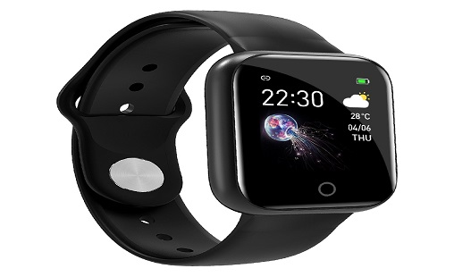
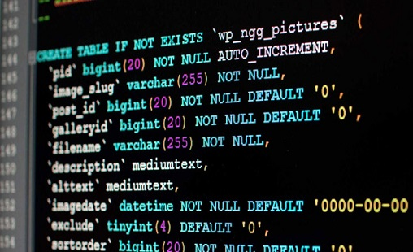

Recent Python
Projects
Here you will find some of my most recent python projects.
We have so much data today than ever before, i analyzed series of different datasets to find
relationships between different features, developing visualizations to understand the data
better, as well as building models to help make predictions.
SMARTWATCH DATA ANALYSIS
Smartwatches are preferred by people who like to take care of their fitness. Analyzing the data collected is one of the usecases of data science in health domain.
STOCK MARKET ANALYSIS

Stock market analysis is one of the usecases of data science in finance. I analyzed the stock price of Amazon to see the current and historical trends to assist in making future buying and selling decisions.
CONVERT SQL QUERIES INTO PYTHON CODES
The aim of this project is to write python codes to obtain the same end result as the SQL queries in a sql file. Task:
- Upload csv files.
- using these files, translate the SQL statement in a sql file into Python codes
- Output the result-set as a .csv file
DIABETES PREDICTION MODEL

In this project i build a simple deep leaning model with Keras, trained the model, evaluated the model and use the model to make prediction. Steps:
- Load Data
- Define Keras Model
- Compile Keras Model
- Fit Keras Model
- Evaluate Keras Model
- Make Predictions
MEDICAL DATA ANALYSIS
Visualizing multi-dimensional data, dimensionality reduction, graph visualization, machine learning and visualization, visualization design, rendering 3D volume data (such as medical CT or MRI data), extracting surfaces from volumetric data, visualizing and identifying meaningful structures in vector fields (such as flow fields from computational fluid dynamics) and tensor fields (as they arise in engineering and modern neuroimaging).
INSERTING DATA INTO MYSQL AND MONGODB SERVERS

In this projects I inserted datasets of different format such as XML, CSV into MySQL and MongoDB servers.
US ACCIDENTS RISK Prediction
For public safety, precautions are necessary to avoid accidents. In 2016, the United States' National Highway Traffic Safety Administration (NHTSA) records show that 37,461 people were killed in 34,436 motor vehicle crashes, an average of 102 per day. Therefore accident risk prediction models can help in saving lives and improving road safety